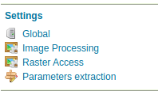

Installing the Parameter Extractor extension¶
The Parameter Extractor extension is listed among the other extension downloads on the GeoServer download page.
The installation process is similar to other GeoServer extensions:
-
Verify that the version number in the filename corresponds to the version of GeoServer you are running (for example 2.19.2 above).
Extract the contents of the archive into the
WEB-INF/libdirectory in GeoServer. Make sure you do not create any sub-directories during the extraction process.Restart GeoServer.
If installation was successful, you will see a new Params-Extractor entry in the left menu, under “Settings”.

The Parameter Extractor menu entry¶
Previous: Parameters Extractor